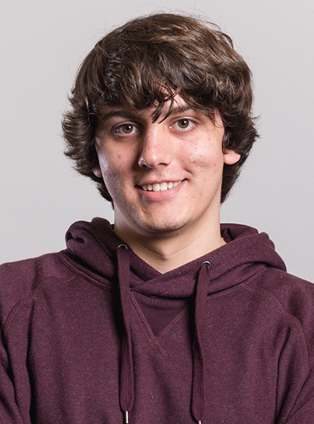

|  |
Tim Becker tbecker [at] cs [dot] wisc [dot] edu Links: CV GitHub Twitter |
I'm a first-year graduate student in Computer Science at UW-Madison, advised by Eric Bach. I'm also an avid CTF player and a former president of the Plaid Parliament of Pwning.
Broadly speaking, I'm interested in using algebraic techniques to study computational questions. Among my favorite topics are cryptography, complexity theory, and computational group theory.
My undergraduate thesis studied the computational complexity of problems in automaton groups. It was advised by Klaus Sutner.
Orbits of Abelian Automaton Groups
(
Springer Link
)
T. Becker, K. Sutner
LATA 2019
Representations and Complexity of Abelian Automaton Groups
(pdf)
T. Becker, advised by K. Sutner
Undergraduate Thesis, 2018
Automatic Problem Generation for Capture-the-Flag Competitions
(pdf)
J. Burket, P. Chapman, T. Becker, C. Ganas, D. Brumley
3GSE15
Representations and Complexity of Abelian Automaton Groups
(slides)
T. Becker, advised by K. Sutner
Undergraduate Thesis, 2018